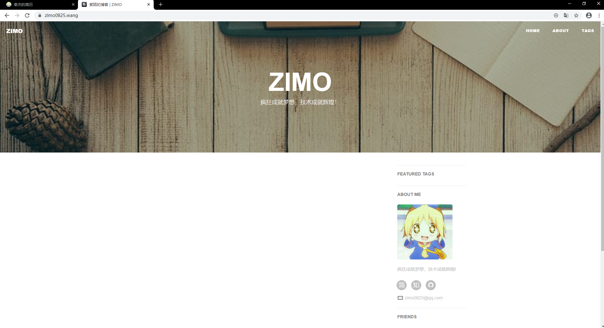
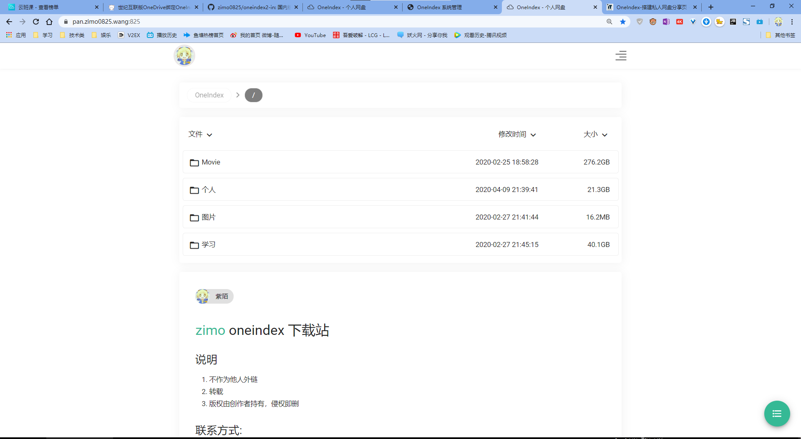
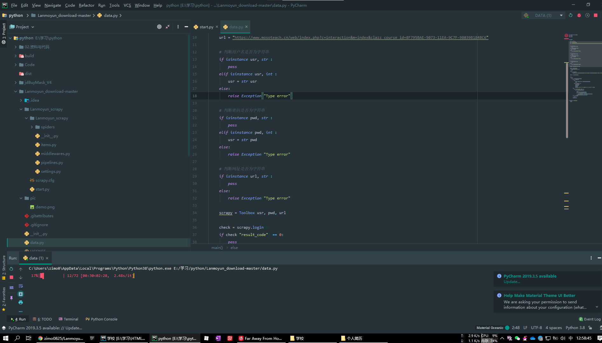

-
- Basic info. 基本信息
- 个人信息: 秦杰/ 男
- 学习经历: 四川水利职业技术学校 计算机应用基础 2018.09-2020.07
- Blog: https://www.zimo0825.wang/
- GitHub: www.github.com/zimo0825
-
- Experience. 项目与工作经验
个人项目
-
Blog（2019） 源代码 Demo
利用 GitHub Pages 快速搭建个人博客
 -
OneIndex-搭建私人网盘分享页 （2020.01） 源代码 Demo
OneIndex是一个类似与PHP目录的程序，其主要功能是将OneDrive的文件目录给列出来，仅仅需要将程序部署在服务器上，不占用太大的空间，索引中的文件并不占用服务器空间，仅仅占用OneDrive容量，流量也不用走服务器流量。
支持部分音视频/图片格式在线浏览和下载，本质是一个在线下载网站。
 -
批量爬取蓝墨云班课中的习题（2020.04） 源代码
Python自动抓取测试题
 -
基于Vue全家桶+Vant制作网易云音乐(移动端) 源代码
主要功能： 搜索歌曲，歌曲排行榜单，歌单分类。
点击上首，下首进行换歌，切换播放模式，手动改变播放进度。
剩余功能正在完善
- Skill. 技能清单
Web前端
-
HTML / CSS
熟练掌握HTML(5)和CSS(3)，具有较好的审美，追求设计的优雅，使用Espnt+Prettier格式化代码
使用Espnt+Prettier格式化代码
-
JavaScript
熟练掌握原生Javascript掌握重要概念如：
原型，闭包，作用域链，面向对象等
熟悉Vue框架及项目流行库的使用，理解重要概念，
如生命周期，异步更新，性能优化
后端
-
环境
熟悉 Linux 开发环境、 Linux 服务器环境搭建部署
-
语言
了解简单nodejs，可以理解面向对象编程
其他
-
是一个有趣的人
喜欢沉浸在代码世界
掌握 Vim,Git,SVN 等开发工具的使用